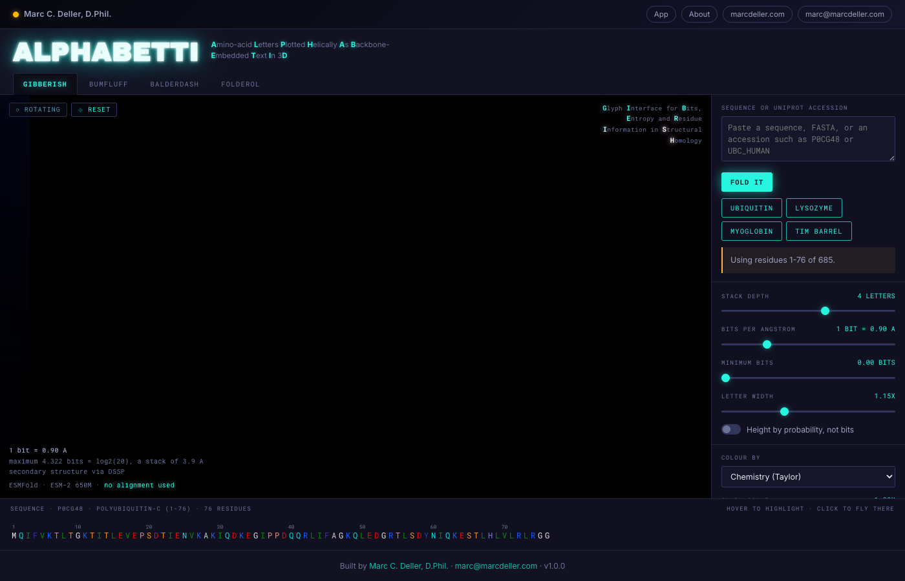
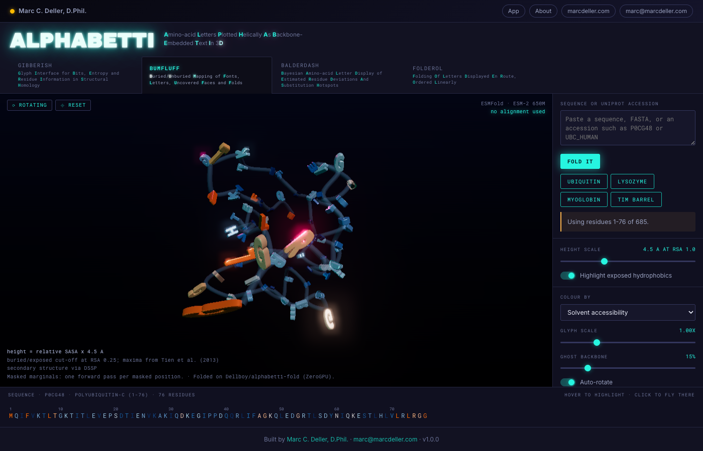
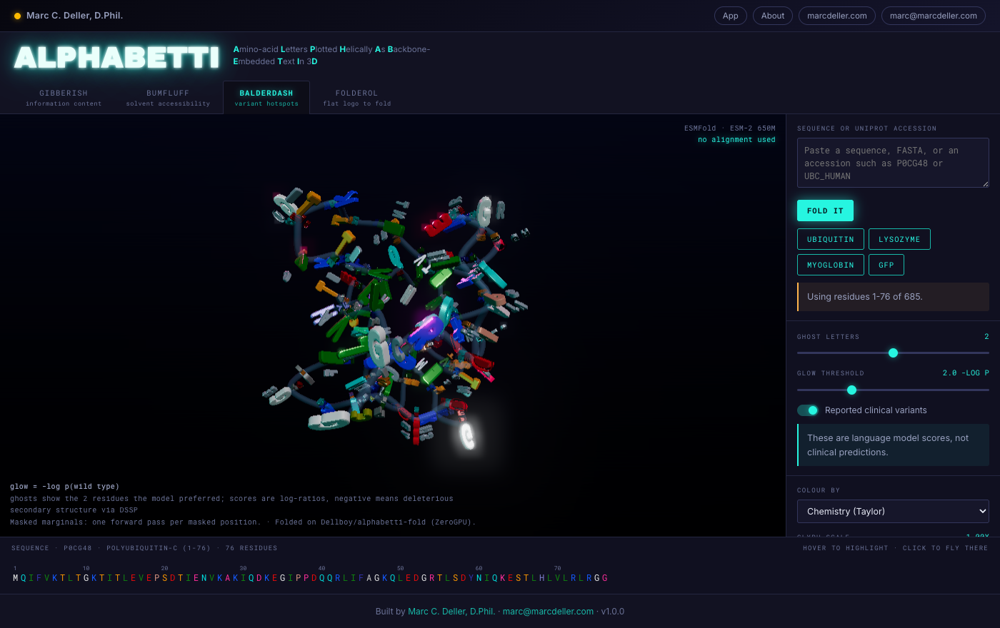

A protein sequence logo, in three dimensions, wrapped around its own predicted structure.
| 🌐 App | alphabetti.mdeller.com |
| 🧬 Fold service | Dellboy/alphabetti-fold on Hugging Face ZeroGPU |
| ✉️ Contact | marc@marcdeller.com |
| 👤 Author | Marc C. Deller, D.Phil. |

ALPHABETTI draws a protein's own single-letter amino acid codes in 3D, positioned and oriented along an ESMFold-predicted backbone. Instead of a cartoon or a stick model, you get the letters themselves: stacked at each position by how strongly a protein language model expects them, tallest at the bottom, standing on the side chain.
Why it matters: a conventional sequence logo tells you which positions are conserved, but it does so on a flat strip that has been divorced from the structure, and it gets there through a multiple sequence alignment, inheriting every bias in the search-align-trim pipeline that produced it. ALPHABETTI has no alignment anywhere: it asks ESM-2 what it expects at each position, having first masked that position so the model cannot read the answer off its own input, and then wraps the answer onto the fold. Conserved buried core positions become tall single-letter towers, tolerant surface positions splay into short scruffy stacks, and helices read as spiral staircases of text. It is useful for: seeing at a glance which parts of a fold a model considers load-bearing, spotting exposed hydrophobic patches that drive aggregation or block crystallisation, finding positions where the wild-type residue is one the model would not have chosen, and producing something that people will actually share.
All four are computed once, shipped in one payload, and switch instantly with no further network round trip.
| Tab | Backronym | Glyph geometry is driven by |
|---|---|---|
| GIBBERISH | Glyph Interface for Bits, Entropy and Residue Information in Structural Homology | ESM-2 per-position probabilities, heights in bits of information content |
| BUMFLUFF | Buried/Unburied Mapping of Fonts, Letters, Uncovered Faces and Folds | Relative solvent accessible surface area |
| BALDERDASH | Bayesian Amino-acid Letter Display of Estimated Residue Deviations And Substitution Hotspots | Variant effect scores, ghost glyphs, ClinVar/gnomAD overlay |
| FOLDEROL | Folding Of Letters Displayed En Route, Ordered Linearly | An animated morph from a flat 2D logo strip into the 3D coordinates |

H_i = -sum_a p_a log2(p_a) Shannon entropy, bits
R_i = log2(20) - H_i information content, maximum 4.322 bits
height_a = p_a * R_i per-letter height, bits
Letters are stacked along the residue's own side-chain direction, each standing on the one below, so the total height of a stack is that position's information content. A unit test checks this against hand-calculated values, because it is the difference between a quantitative picture and a decorative one.
No small-sample entropy correction is applied. The usual correction compensates for estimating a distribution from a finite number of aligned sequences; here there is no alignment and no sample, so correcting would subtract a bias that does not exist.
| Quantity | Method | Validation |
|---|---|---|
| Structure | ESMFold (facebook/esmfold_v1) |
0.84 Å CA RMSD for ubiquitin against the 1UBQ crystal structure |
| Expectation | ESM-2 650M (facebook/esm2_t33_650M_UR50D), masked marginals |
Unmasked marginals return the wild type at 100 % of positions; see below |
| pLDDT | ESMFold's B-factor column | Normalised and asserted to 0-100; a 0-1 scale renders as a uniformly unconfident protein |
| Relative SASA | FreeSASA, 1.4 Šprobe, over Tien et al. (2013) theoretical maxima | Total SASA 4804 Ų for 1UBQ against a published value of about 4800 |
| Secondary structure | DSSP where present, else P-SEA from CA positions | 83.7 % three-state agreement with DSSP over 805 residues of ten chains |
| Virtual Cβ | Standard tetrahedral construction from N, CA, C | 0.13 Å mean deviation from the real Cβ across all 70 non-glycine residues of 1UBQ |
| Variant score | log p(mutant) - log p(wild type), ESM-1v convention |
Wild-type entry is exactly zero by construction; negative means deleterious |
Glycine has no Cβ, so one is constructed and glycines are never skipped: a hole at every glycine would be a hole at exactly the positions where backbones turn.
The original specification made masked marginals an opt-in toggle, "L times slower". They are, and on a CPU that would settle it. On a GPU it does not, and the cheap option is actively misleading. Measured on ubiquitin:
| Wild-type marginals | Masked marginals | |
|---|---|---|
| Top-1 equals wild type | 100 % | 80 % |
| Mean information content | 4.01 bits | 3.20 bits |
| Language model time | 0.03 s | 0.42 s (about 2.2 s at 400 residues) |
An unmasked forward pass can read each residue off its own input, so it returns near-maximal confidence everywhere and GIBBERISH becomes a 3D rendering of the input sequence. Set ALPHABETTI_MASKED_MARGINALS=0 to compare.
The GFP example is deliberately one that does not work. ESM-2 has almost no evolutionary signal for avGFP: masked marginals recover the wild-type residue at 10 % of positions against 8 % for a randomly shuffled version of the same sequence, and mean information content is 0.27 of a possible 4.322 bits. Because ESMFold's trunk is ESM-2, the structure fails with it rather than independently, at mean pLDDT 42.8. The two never contradict each other, which is precisely why it is worth showing. Check the pLDDT before believing a picture.

Browser (three.js r169, vanilla ES modules, no build step)
| JSON over fetch()
v
Flask + Gunicorn on the mdeller.com droplet
|-- SQLite cache, keyed on sha256(sequence)
|-- bounded thread pool, job state in SQLite
v HTTPS
Hugging Face ZeroGPU Space
|-- ESMFold -> coordinates + pLDDT
`-- ESM-2 650M -> a 20 x L probability matrix
The fold does not run on the droplet, and cannot. That box has 3.9 GB of RAM with about 2.0 GB free, two cores, and eight other applications already on it; the esmfold_v1 checkpoint alone is 7.9 GB of fp32 weights, and a 400-residue fold needs several more gigabytes for the L x L pair representation. It is short by a factor of four to six.
So the Space returns nothing but coordinates and probabilities, and every derived quantity is computed in this repository — information content, entropy, variant scores, accessibility, secondary structure, per-residue frames — in modules that need neither a GPU nor a network and are unit-tested without one. The science does not move when the compute does.
That decision also removed Redis and RQ. With no models to hold, a job spends its entire life waiting on one HTTPS request, which is what threads are for; job state lives in SQLite so both Gunicorn workers can see it.
Every setting is an environment variable. See .env.example.
| Variable | Default | What it does |
|---|---|---|
ALPHABETTI_FOLD_BACKEND |
hf_space |
hf_space, local (torch in-process, needs ~16 GB), or none (cache only) |
ALPHABETTI_HF_SPACE |
Dellboy/alphabetti-fold |
The Space that holds the models |
HF_TOKEN |
(none) | Required in practice: the anonymous ZeroGPU quota is a handful of folds and runs out with an error that does not mention quota |
ALPHABETTI_MASKED_MARGINALS |
1 |
Masked marginals; 0 gives the faster, misleading unmasked pass |
ALPHABETTI_MAX_LENGTH |
400 |
Longer input is refused with an offer to truncate, naming the exact range kept |
ALPHABETTI_MIN_LENGTH |
10 |
|
ALPHABETTI_FOLD_TIMEOUT |
900 |
Seconds before a fold is given up on cleanly |
ALPHABETTI_MAX_CONCURRENT |
2 |
Concurrent folds; ZeroGPU serialises anyway and quota is per account |
ALPHABETTI_TOP_K |
6 |
Amino acids per position carried in the payload |
ALPHABETTI_CACHE |
instance/alphabetti.sqlite |
Cache database |
ALPHABETTI_ENABLE_UNIPROT |
1 |
Accession and entry-name lookup |
ALPHABETTI_ENABLE_VARIANTS |
1 |
EBI Proteins API overlay for BALDERDASH |
| Format | Route | Notes |
|---|---|---|
| PDB | /api/download/<id>.pdb |
The predicted structure, pLDDT in the B-factor column |
| JSON | /api/download/<id>.json |
The full payload that drives all four tabs |
| CSV | /api/download/<id>.csv |
Per residue: resnum, aa, pLDDT, RSA, SASA, SS, bits, entropy, surprise |
| GLB | in-app | Baked instanced geometry with vertex colours, for Blender or AR |
| STL | in-app | For printing; letters are separate shells and the app says so |
| PNG | in-app | 1x, 2x, 4x, with a transparent-background option |
| GIF | in-app | One FOLDEROL loop, with a resolution selector |
git clone https://github.com/bellcheddar/ALPHABETTI.git
cd ALPHABETTI
python3 -m venv .venv
.venv/bin/pip install -r requirements.txt
cp .env.example .env # add HF_TOKEN
.venv/bin/python app.py # http://127.0.0.1:8006
The four examples are committed as computed payloads, so the app shows a rotating protein before it has ever reached a GPU.
.venv/bin/python -m pytest tests/ -q # 47 tests, no GPU, no network
.venv/bin/python scripts/prewarm.py # recompute the examples
.venv/bin/python scripts/make_typeface.py /path/to/font.ttf out.json 700
.venv/bin/python scripts/make_icon.py # icon, favicon, OG card
Deployment: deploy/provision.sh once, deploy/deploy.sh thereafter.
orientation.js for FOLDEROL.mkdssp is not on the droplet, making the fallback the production path.mkdssp rejects any file with no PDB HEADER line and ESMFold emits none, while a bare except: pass reported it as merely absent.InstancedMesh per amino acid, twenty draw calls regardless of chain length.typeface.json — with the curve argument order verified against the source outlines to 0.34 %.BENCHMARKS.md with real timings from the machines that serve the app.alphabetti.mdeller.com needs an A record to 45.55.102.228 and a certbot certificate; mdeller.com's certificate does not cover subdomains.apps.json, with the beacon pointing at the 3D typeface, since a scanner never fetches it.FoldBackend already has the seam for a fallback.MIT.
Built by Marc C. Deller, D.Phil. · marcdeller.com · marc@marcdeller.com
Marc C. Deller, D.Phil.
Structural biologist & drug discovery scientist
| 🌐 | marcdeller.com | ✉️ | marc@marcdeller.com | 🐙 | github.com/bellcheddar/ALPHABETTI.git |